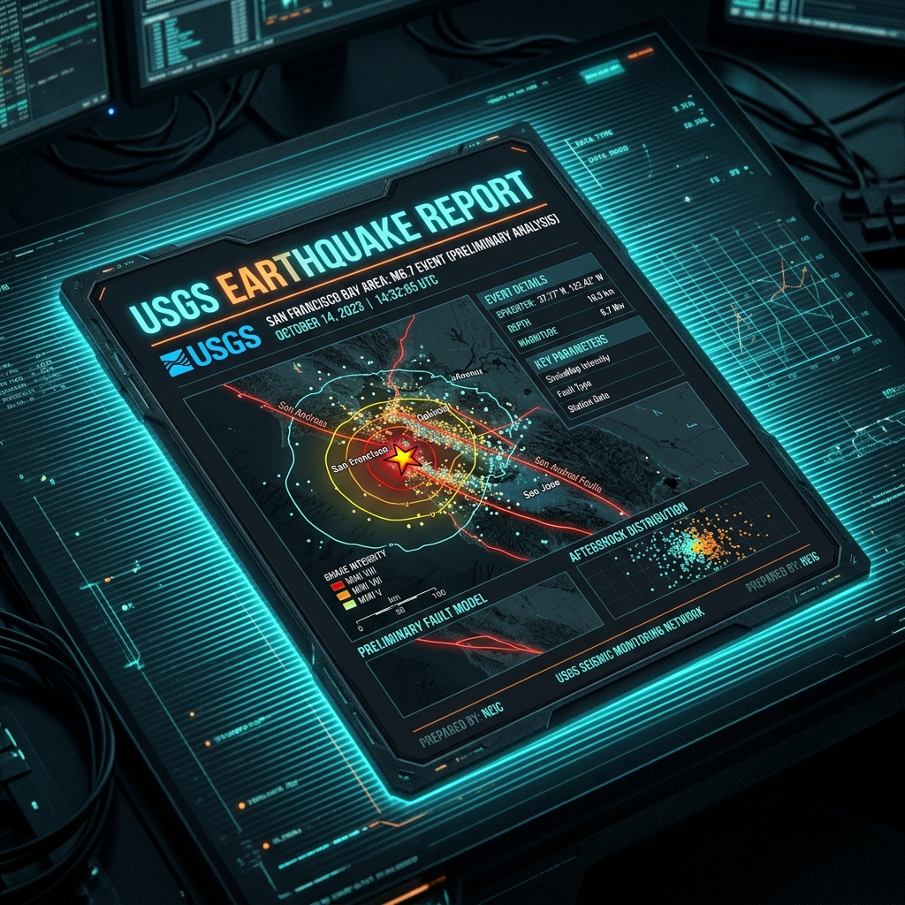
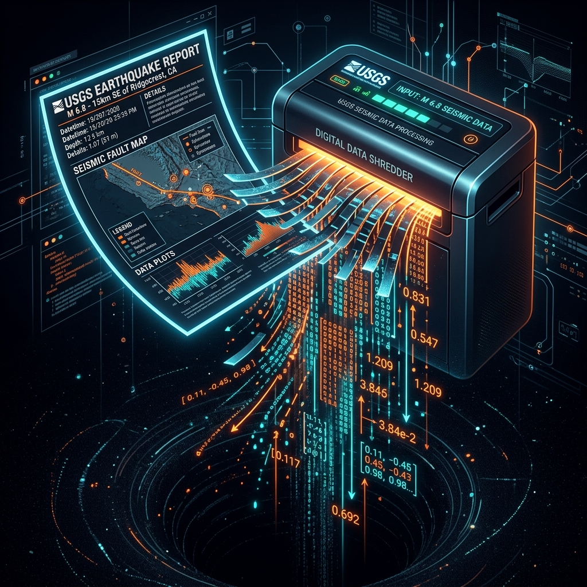
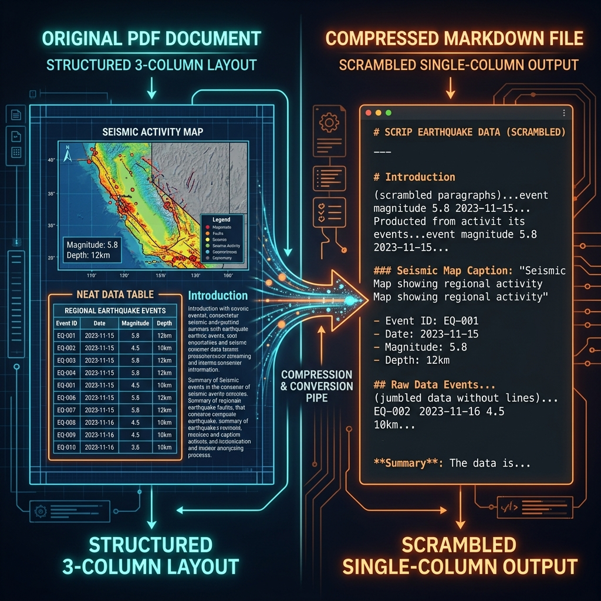
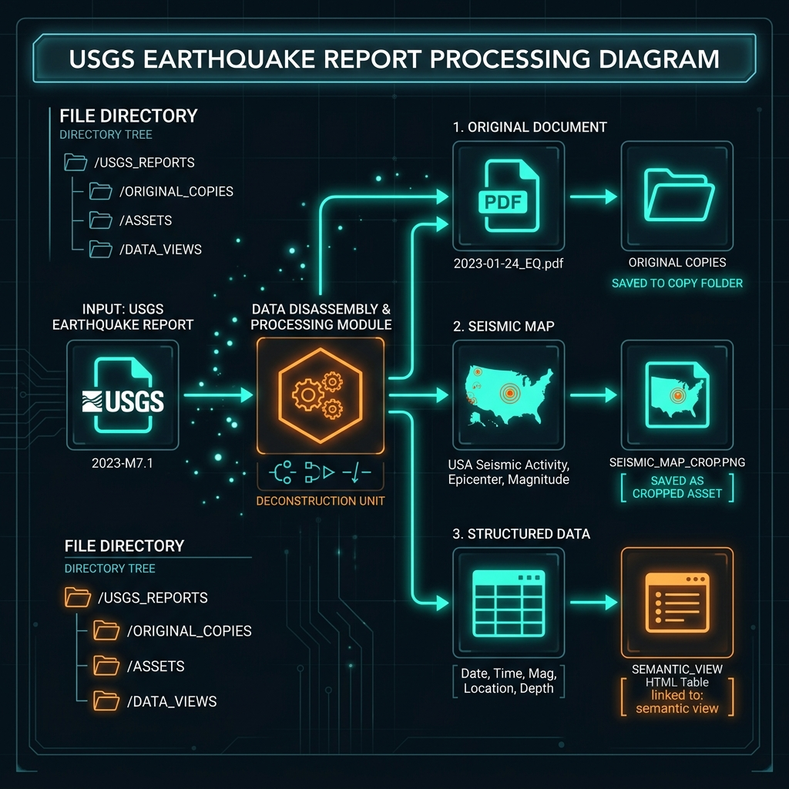
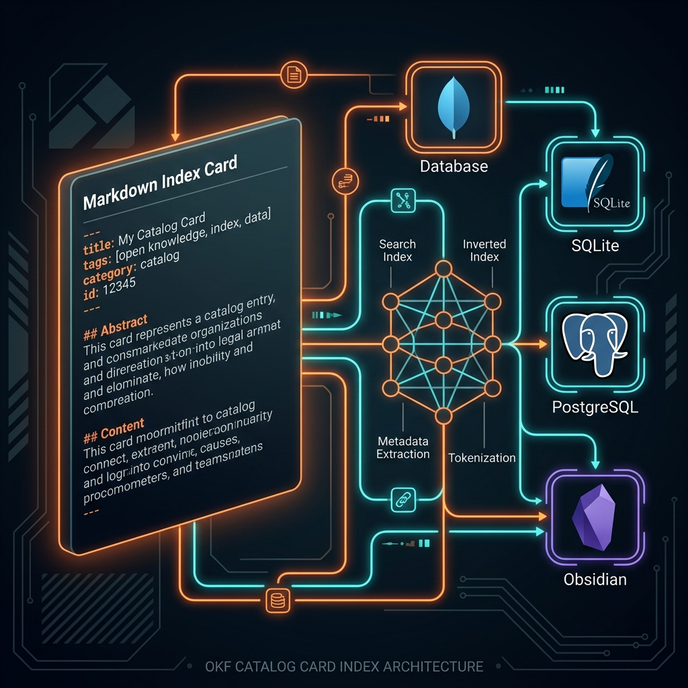

copy-tag-link
Welcome to Copy-Tag-Link, or CTL for short. A file-first ingestion standard for shared AI memory.
When you build AI knowledge systems, you start with rich documents containing maps, columns, and data tables.

Traditional RAG systems shred documents like scrap paper. They break down layout structures and generate raw float coordinate matrices.
The core structure is lost, image contexts dissolve, and exact coordinate/table data are replaced by approximations.

Converting rich layouts directly to Markdown compresses multi-column layouts into a vertical stream, scrambling chronological order.
Table cells lose boundaries, and spatial components like maps are reduced to flat, detached text captions.

We preserve the original source as evidence, copy out layout assets like images and tables, tag them with provenance, and link them to semantic HTML views.
The output remains human-readable, machine-validatable, and fully independent of any one model.

These parsed components are cataloged using OKF cards: markdown files with standard YAML metadata tags.
The OKF cards act as portable index entries, making your rich HTML segments and assets instantly searchable and accessible to any database or AI agent you choose.

Because the folder is the source of truth, your memory survives database failures. If your database dies, you can rebuild your indexes in minutes.
Use the OKF tags to index your data with SQLite, PostgreSQL, Qdrant, Graphify, Obsidian, or whatever you like.
Keep your data local, portable, and durable. The folder is the source of truth: databases and vector spaces are rebuildable accelerators.
Zippable, syncable folders that run offline.
Preserves all source evidence cleanly before review.
Generates index cards for Obsidian and RAG pipelines.
If indexes fail, rebuild them directly from source.
CTL-Core is designed to be simple. Fork the repository, plug in the custom parsers and database indexers you need, and keep your memory standard.